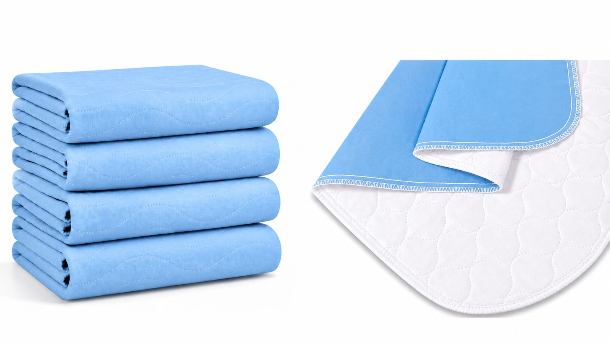

Markets · 日本
Japan: the most mature care market
Japan's ageing population created an adult-care product culture years ahead of other countries. Washable waterproof sheets compete on fit, quietness, quality and price.
 43
432011Adult diaper sales overtook baby diapersFortune / Bloomberg
$2.9BJapan adult diaper market, 2025: a proxy for incontinence spendingIMARC
>35%Projected share of people aged 65+ by 2050ResearchAndMarkets
¥3,000Average price for 介護用 防水シーツ; washable partial sheets from ≈ ¥1,890Comparison sites, 2026
Buyer behaviour
What Japanese shoppers check
- 防水 vs 撥水: true waterproof (TPU-backed) pads outrank water-repellent ones in care rankings
- Quietness (音がしない) and breathability (ムレない)
- Exact sizes in cm, including half-sheet 90×60 and full 90×170 cm
- Dryer compatibility (乾燥機対応) and 綿100% top options
- Japanese care label and 家庭用品品質表示法 compliance
- Comparison sites (my-best, mynavi) and rankings strongly influence purchases

12Keywords
日本語キーワード
| Keyword | Meaning | Use |
|---|---|---|
| 洗える防水シーツ | Washable waterproof sheet | Core term |
| 介護用 防水シーツ | Waterproof sheet for elderly care | Elderly positioning |
| 介護用 吸水パッド | Absorbent pad for care | Category check |
| おねしょシーツ | Bedwetting sheet | Kids |
| ペット用 防水マット | Pet waterproof mat | Pets |
| 繰り返し使える / 洗濯機で洗える | Reusable / machine washable | Feature terms |
Channels: Amazon.co.jp, Rakuten, Yahoo! Shopping, and care retailers and rental (介護用品レンタル) dealers. In Japan, search share is split between Google (≈60%) and Bing / Yahoo! (StatCounter, Oct 2026), so a Japanese landing page supports both.
Sources
- ASINsight — "washable underpads" Amazon US report (Jul 2026)
- The Business Research Company — Reusable Underpads Market Report
- Persistence Market Research — Reusable Incontinence Products Market
- Fortune Business Insights — Disposable Underpads Market
- Fortune — Japan adult vs baby diapers (2024)
- IMARC — Japan Adult Diaper Market
- my-best — 介護用防水シーツ ranking (2026)
- testbedarf.de — Inkontinenzauflage Vergleich 2026
- TRSA — Reusable underpads fact sheet
- Amazon.com product pages (Utopia Bedding, IMPROVIA), viewed Nov 2026
Market-research figures differ by scope and method. Treat them as directional and validate them before investment decisions.
Ready to build your washable underpad line?
Tell us your market, sizes and quantities. We reply with a spec sheet and price ladder within one business day.